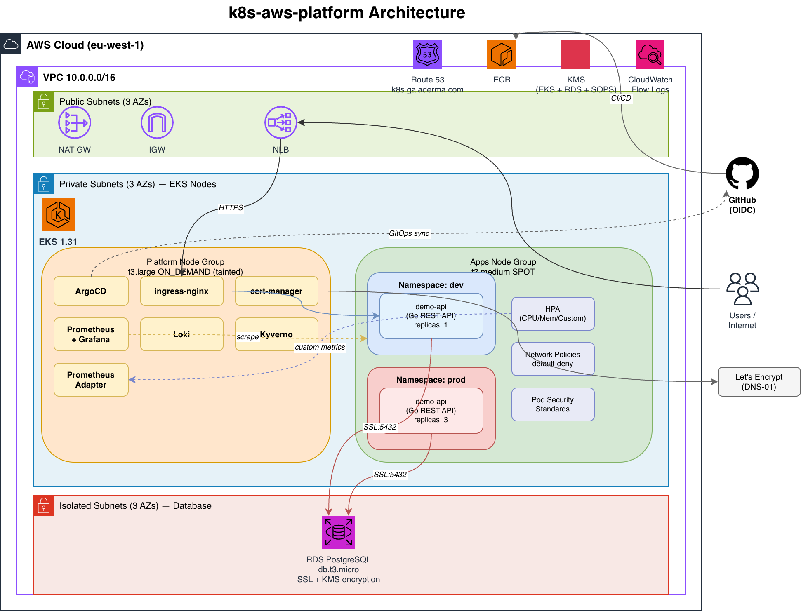

Architecture¶
Three views of the same system. Start with the layered diagram for the AWS-and-cluster topology, then read the request path and IRSA flow to understand the dynamics.
Layered topology (existing draw.io)¶

Static image caveat
The PNG is a topology sketch, not an exhaustive inventory. The current live platform also includes
aws-load-balancer-controller and external-dns, and Route 53 is an apex gaiaderma.com hosted
zone that serves *.k8s.gaiaderma.com records. The Mermaid diagrams below are the more current
logical view.
Source: docs/architecture.drawio — open in app.diagrams.net. The file has three pages:
- k8s-aws-platform Architecture (rendered above) — VPC + subnets + EKS node groups + AWS services.
- GitOps Sync Waves — App-of-Apps + wave -1 → 3 ordering.
- Request Path + Side Channels — primary user path with cert-manager and external-dns side-channels.
To re-export the PNG with all three pages: File → Export as → PNG → All Pages in draw.io.
Request path (Mermaid)¶
flowchart LR
user([Browser /<br/>API client])
dns[(Route 53<br/>apex: gaiaderma.com)]
extdns[external-dns<br/>IRSA]
lbc[AWS Load Balancer<br/>Controller + IRSA]
cm[cert-manager<br/>IRSA]
le[(Let's Encrypt<br/>ACME DNS-01)]
nlb{{AWS NLB<br/>Network Load Balancer}}
ingress[ingress-nginx<br/>on platform nodes]
svc[Service ClusterIP]
pods[demo-api Pods<br/>spread across AZs]
rds[(RDS Postgres 16<br/>isolated subnets, SSL only)]
ebs[(EBS gp3 via CSI)]
user -->|"DNS lookup *.k8s.gaiaderma.com"| dns
user -->|TLS 443| nlb
nlb --> ingress
ingress --> svc
svc --> pods
pods --> rds
pods -.uses.-> ebs
extdns -.creates A records.-> dns
lbc -.reconciles Service<br/>to NLB.-> nlb
cm -.DNS-01 challenge<br/>via Route 53.-> dns
cm -.requests cert.-> le
cm -.injects TLS Secret.-> ingressOrange-equivalent nodes are AWS-managed (Route 53, NLB, RDS, EBS); the in-cluster path is the simple user → NLB → ingress → svc → pods. The dotted arrows are the side-channels — automation that makes the static drawing actually work.
GitOps sync flow¶
flowchart TB
dev([git push])
repo[(github.com/vaskosmihaylov/<br/>k8s-aws-platform)]
ci[GitHub Actions<br/>terraform plan / manifest validation<br/>apply requires EKS API network path]
subgraph cluster["EKS cluster"]
direction TB
argocd[Argo CD<br/>installed by Terraform<br/>helm_release]
root["root Application<br/>argocd/bootstrap/root-app.yaml"]
subgraph wave_m1["Wave -1"]
pc[priority-classes]
end
subgraph wave_0["Wave 0"]
ns[namespaces<br/>PSS labels + quotas]
cm[cert-manager + CRDs]
lbc[AWS Load Balancer Controller]
end
subgraph wave_1["Wave 1"]
ingr[ingress-nginx]
end
subgraph wave_2["Wave 2"]
kps[kube-prometheus-stack]
loki[loki]
edns[external-dns]
end
subgraph wave_3["Wave 3"]
padapter[prometheus-adapter]
kyv[kyverno<br/>ServerSideApply=true]
end
subgraph apps["App layer (Kustomize)"]
demoapi[demo-api-dev / demo-api-prod]
end
end
dev --> repo
repo -.PR.-> ci
repo -.pull every 3 min<br/>or on webhook.-> argocd
argocd --> root
root --> wave_m1 --> wave_0 --> wave_1 --> wave_2 --> wave_3 --> appsThe invariant: Argo CD pulls from git, CI never pushes to the cluster. CI can lose all its AWS creds and the cluster keeps reconciling. See Argo CD for the wave-by-wave detail.
IRSA — pod-to-AWS identity flow¶
sequenceDiagram
participant Pod as cert-manager Pod
participant SA as ServiceAccount<br/>cert-manager
participant Kubelet
participant OIDC as EKS OIDC Provider
participant STS as AWS STS
participant R53 as Route 53 API
Note over SA: annotation:<br/>eks.amazonaws.com/role-arn=<br/>arn:aws:iam::649822034735:role/<br/>k8s-platform-dev-cert-manager
Kubelet->>SA: projected token request
SA->>Pod: projected SA token<br/>(JWT signed by cluster OIDC)
Pod->>STS: AssumeRoleWithWebIdentity<br/>(token + RoleArn)
STS->>OIDC: verify JWT signature
OIDC-->>STS: valid
STS->>STS: check trust policy<br/>(sub matches SA, aud=sts.amazonaws.com)
STS-->>Pod: temporary AWS creds (15 min)
Pod->>R53: ChangeResourceRecordSets<br/>(DNS-01 challenge TXT)
R53-->>Pod: 200 OKThis is the AWS killer feature for K8s — covered in Terraform Foundation and contrasted with on-prem alternatives in On-Prem Comparison.
Final health snapshot¶
On 2026-07-07, every Argo CD Application was Synced/Healthy, no pods were Pending, external-dns
reported records already up to date, and public HTTPS endpoints responded:
| Host | Expected response |
|---|---|
argocd.k8s.gaiaderma.com |
HTTP 200 |
demo-dev.k8s.gaiaderma.com/readyz |
HTTP 200 |
demo.k8s.gaiaderma.com/readyz |
HTTP 200 |
grafana.k8s.gaiaderma.com |
HTTP 302 to /login |
Observability data flow¶
flowchart LR
pods[App + platform pods]
sm[ServiceMonitor /<br/>PodMonitor CRs]
prom[Prometheus<br/>StatefulSet]
am[Alertmanager]
pa[prometheus-adapter]
cma["custom.metrics.k8s.io<br/>(APIService)"]
hpa[HPA controller]
promtail[Promtail<br/>DaemonSet]
loki[(Loki)]
grafana[Grafana]
user([localhost:3000])
pods -->|/metrics scraped| prom
sm -.tells Prometheus<br/>what to scrape.-> prom
prom -->|alert rules fire| am
pa -->|reads from| prom
pa -.serves.-> cma
hpa -->|queries| cma
hpa -->|scales| pods
pods -->|stdout JSON| promtail
promtail --> loki
grafana -->|datasource| prom
grafana -->|datasource| loki
user --> grafanaServiceMonitor is the CRD that makes scraping discoverable — apps declare "scrape me on :8080/metrics" with a label, and Prometheus picks them up automatically. No reload, no static configs.